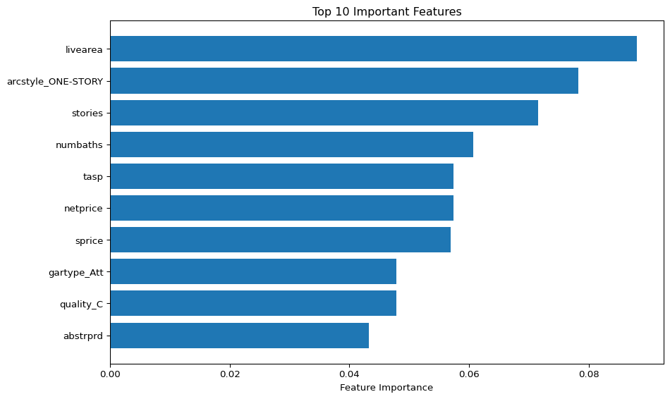
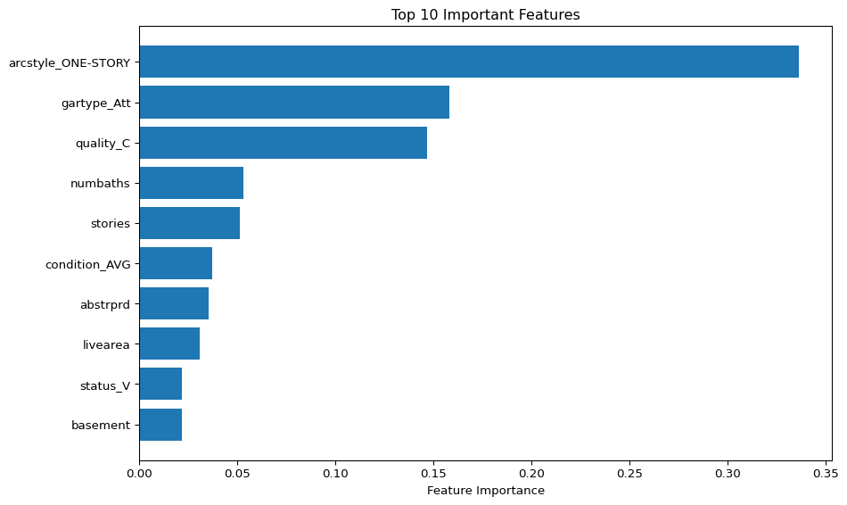
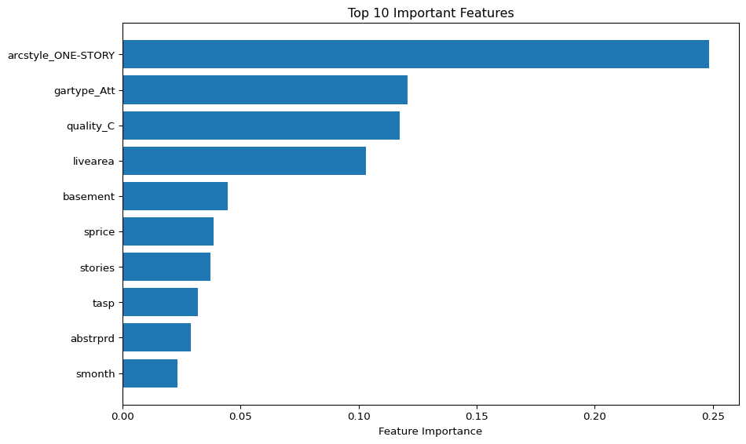

import pandas as pd
import numpy as np
from lets_plot import *
# add the additional libraries you need to import for ML here
LetsPlot.setup_html(isolated_frame=True)
from sklearn.model_selection import train_test_split
from sklearn.metrics import classification_report
from sklearn.ensemble import RandomForestClassifier, GradientBoostingClassifier
from sklearn.tree import DecisionTreeClassifier
import matplotlib.pyplot as plt# import your data here using pandas and the URL
df = pd.read_csv('https://raw.githubusercontent.com/byuidatascience/data4dwellings/master/data-raw/dwellings_ml/dwellings_ml.csv')Repeat the classification model using 3 different algorithms. Display their Feature Importance, and Classification Report. Explian the differences between the models and which one you would recommend to the Client.
Below you can see three models random forest, gradient boosting, and decision tree. out of these three models, random forest produces the best results and would be the best choice for this model. In the feature importance charts, you can see that the random forest model relies the most on live area while the other two both use if the house is one story for their most important feature.
# Include and execute your code here
X = df.drop(columns=['before1980', 'yrbuilt', 'parcel'])
y = df.before1980
X_train, X_test, y_train, y_test = train_test_split(X, y, test_size=0.2, random_state=1)
# model 1
model = RandomForestClassifier()
model.fit(X_train, y_train)
pred = model.predict(X_test)
print(classification_report(y_test, pred))
importances = model.feature_importances_
features = X.columns
feat_df = pd.DataFrame({'Feature': features, 'Importance': importances})
feat_df = feat_df.sort_values('Importance', ascending=False)
# Plot
plt.figure(figsize=(10, 6))
plt.barh(feat_df['Feature'][:10][::-1], feat_df['Importance'][:10][::-1])
plt.xlabel("Feature Importance")
plt.title("Top 10 Important Features")
plt.tight_layout()
plt.show()
# model2
model = GradientBoostingClassifier()
model.fit(X_train, y_train)
pred = model.predict(X_test)
print(classification_report(y_test, pred))
importances = model.feature_importances_
features = X.columns
feat_df = pd.DataFrame({'Feature': features, 'Importance': importances})
feat_df = feat_df.sort_values('Importance', ascending=False)
# Plot
plt.figure(figsize=(10, 6))
plt.barh(feat_df['Feature'][:10][::-1], feat_df['Importance'][:10][::-1])
plt.xlabel("Feature Importance")
plt.title("Top 10 Important Features")
plt.tight_layout()
plt.show()
# model3
model = DecisionTreeClassifier()
model.fit(X_train, y_train)
pred = model.predict(X_test)
print(classification_report(y_test, pred))
importances = model.feature_importances_
features = X.columns
feat_df = pd.DataFrame({'Feature': features, 'Importance': importances})
feat_df = feat_df.sort_values('Importance', ascending=False)
# Plot
plt.figure(figsize=(10, 6))
plt.barh(feat_df['Feature'][:10][::-1], feat_df['Importance'][:10][::-1])
plt.xlabel("Feature Importance")
plt.title("Top 10 Important Features")
plt.tight_layout()
plt.show() precision recall f1-score support
0 0.91 0.90 0.90 1727
1 0.94 0.94 0.94 2856
accuracy 0.93 4583
macro avg 0.92 0.92 0.92 4583
weighted avg 0.93 0.93 0.93 4583

precision recall f1-score support
0 0.88 0.84 0.86 1727
1 0.91 0.93 0.92 2856
accuracy 0.90 4583
macro avg 0.90 0.89 0.89 4583
weighted avg 0.90 0.90 0.90 4583

precision recall f1-score support
0 0.87 0.88 0.87 1727
1 0.93 0.92 0.92 2856
accuracy 0.90 4583
macro avg 0.90 0.90 0.90 4583
weighted avg 0.90 0.90 0.90 4583

Join the dwellings_neighborhoods_ml.csv data to the dwelling_ml.csv on the parcel column to create a new dataset. Duplicate the code for the model you recommended in the stretch question above and update it to use this data. Explain the differences and if this changes the model you recomend to the Client.
With the extra data added to help train the model, our models accuray went from good to excelent. It increased our f1 score from .92 to .97 which is great. This does not change the reccomended model but is a helpfull change to give the model more information for more accurate predictions.
neighborhood_df = pd.read_csv('https://raw.githubusercontent.com/byuidatascience/data4dwellings/master/data-raw/dwellings_neighborhoods_ml/dwellings_neighborhoods_ml.csv')
merged_df = pd.merge(df, neighborhood_df, on='parcel')
X_merged = merged_df.drop(columns=['before1980', 'yrbuilt', 'parcel'])
y_merged = merged_df.before1980
X_train, X_test, y_train, y_test = train_test_split(X_merged, y_merged, test_size=0.2, random_state=1)
model = RandomForestClassifier()
model.fit(X_train, y_train)
pred = model.predict(X_test)
print(classification_report(y_test, pred)) precision recall f1-score support
0 0.95 0.97 0.96 2057
1 0.98 0.97 0.97 3536
accuracy 0.97 5593
macro avg 0.96 0.97 0.97 5593
weighted avg 0.97 0.97 0.97 5593
Can you build a model that predicts the year a house was built? Note this is a regression ML model, not a classifier. Report appropriate evaluation metrics for the model. Explain the model and the evaluation metrics you used to determine if the model is good.
This model has on mae of 12 which means on average its year built prediction is 12 years off. The RMSE is 18 which isnt much higher than mae which is good, it shows that we dont have many outliers. R2 score is a score from 0 to 1 that is another metric for a regression models performance.
from sklearn.ensemble import GradientBoostingRegressor
from sklearn.metrics import mean_absolute_error, mean_squared_error, r2_score
X_merged = merged_df.drop(columns=['before1980', 'yrbuilt', 'parcel'])
y_merged = merged_df.yrbuilt
X_train, X_test, y_train, y_test = train_test_split(X_merged, y_merged, test_size=0.2, random_state=1)
model = GradientBoostingRegressor()
model.fit(X_train, y_train)
pred = model.predict(X_test)
mae = mean_absolute_error(y_test, pred)
rmse = mean_squared_error(y_test, pred, squared=False)
r2 = r2_score(y_test, pred)
print(f"Regression Performance:")
print(f"MAE: {mae:.2f}")
print(f"RMSE: {rmse:.2f}")
print(f"R2 Score: {r2:.3f}")Regression Performance:
MAE: 12.78
RMSE: 18.31
R2 Score: 0.754C:\Users\zwmcl\AppData\Local\Programs\Python\Python313\Lib\site-packages\sklearn\metrics\_regression.py:492: FutureWarning: 'squared' is deprecated in version 1.4 and will be removed in 1.6. To calculate the root mean squared error, use the function'root_mean_squared_error'.
warnings.warn(